Eerste proefritten RSG3 gemaakt en meer...
- zondag 30 november 2008 21:31
- Geschreven door Joachim
In de afgelopen twee weken zijn diverse proefritten gemaakt met RSG3-rijtuig 5503. De ritten werden gemaakt op de hoofdbaan van het Rotterdamse metronet. Buiten de spitsen werd diverse malen tussen De Terp (Capelle a/d IJssel), Aveling (Hoogvliet) en De Akkers (Spijkenisse) gereden. Passagiers mogen nog niet mee. Op donderdag 21 augustus werd de eerste proefrit gemaakt.
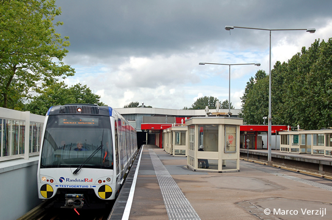
Na een eerste proefrit staat rijtuig 5503 te wachten op station Kralingse Zoom, spoor 4.
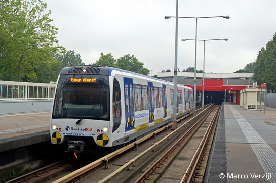
Op 26 augustus wordt ook een proefrit gemaakt.
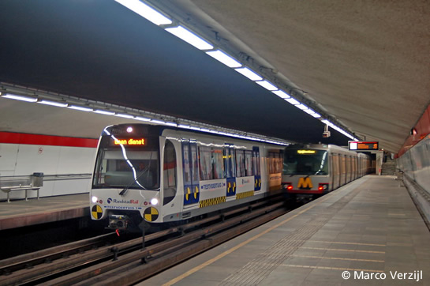
Rijtuig 5503 op station Oostplein vertrekt in oostelijke richting.
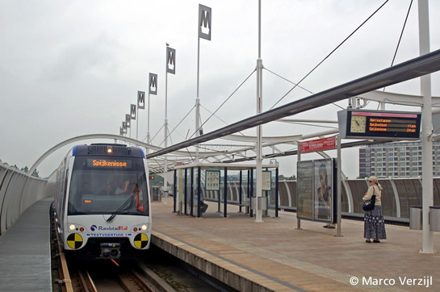
Op 27 augustus wordt voor de eerste keer doorgereden naar De Akkers in Spijkenisse.
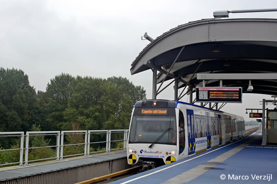
Het rijtuig houdt kort halt op station Pernis.
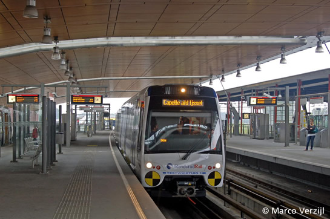
Op station Schiedam Centrum wordt gewacht op vertrekkend metroverkeer richting Ommoord en Nesselande.
5505
Op 15 augustus werd rijtuig 5505 afgeleverd aan de remise Waalhaven. Kort na aflevering werd het metrorijtuig overgebracht naar de remise 's-Gravenweg. Daar zijn diverse proeven gedaan, samen met rijtuig 5504. De rijtuigen zijn niet voorzien van een "Testvoertuig"-bestickering. In de remise Waalhaven wordt het interieur van de nieuwe rijtuigen ingebouwd.
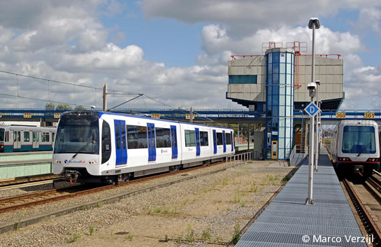
Een testrit op spoor 338 van emplacement 's-Gravenweg met rijtuig 5505. Op spoor 360 staat rijtuig 5418.
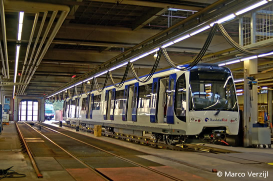
Rijtuig 5504 is niet voorzien van "Testvoertuig"-bestickering en staat op spoor 323-1 van de remise 's-Gravenweg.
Testritten RandstadRail Erasmuslijn
Hoewel de rijtuigen 5501 en 5502 momenteel in de lijnwerkplaats Leidschendam verblijven, zijn er nog geen uitgebreide test- en proefritten met de rijtuigen gemaakt op de RandstadRail Erasmuslijn. Het Haagse vervoerbedrijf HTM heeft nog geen toestemming gegeven om de rijtuigen op het Haagse deel te laten proefrijden.
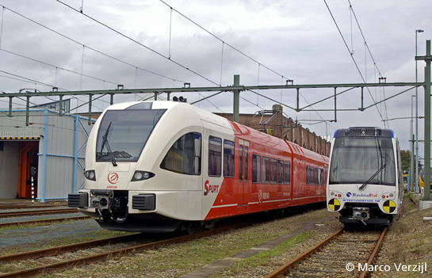
Een elektrische "Spurt" van Arriva staat naast rijtuig 5501 op het opstelterrein van de remise Leidschendam.
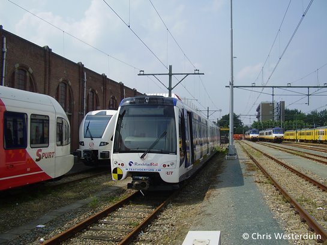
Rijtuig 5502, eveneens aanwezig in Leidschendam.
Emplacement Waalhaven
Op 1 augustus is de verlenging van de opstelsporen van emplacement Waalhaven voltooid. Alle opstelsporen zijn ruim 80 meter verlengd in oostelijke richting. Door de uitbreiding is er nu stallingsruimte voor het nieuwe metromaterieel voor de RandstadRail Erasmuslijn.
Stremming
Van 28 juli tot en met 28 augustus vonden er omvangrijke werkzaamheden plaats aan de wisselcomplexen Beurs en Leuvehaven. Hierdoor was er geen metroverkeer mogelijk op de Erasmuslijn tussen station Wilhelminaplein en het Centraal Station. De werkzaamheden werden binnen de termijn (12 dagen) afgerond. Op zaterdagmorgen 9 augustus konden de exploitatie zonder problemen hervat worden. Later deze maand een uitgebreid nieuwsitem over de verbouwingswerkzaamheden van deze wisselcomplexen.
Winterdienstregeling
Op maandag 1 september is de winterdienstregeling weer ingegaan. Metro's rijden meer frequent dan in de zomerperiode. Met het ingaan van de winterdienstregeling wordt op het traject De Terp (Capelle a/d IJssel) - De Akkers (Spijkenisse) een deel van de wagendiensten gedeeltelijk of geheel met rijtuigen uit de 5300-serie gereden.
Technische revisie
De rijtuigen 5246 en 5251 hebben een technische revisie gehad. Rijtuig 5246 is inmiddels weer in dienst gesteld.
6201
Locomotief 6201 werd op 25 juli met een dieplader overgebracht van de Centrale Werkplaats Kleiweg naar de lijnwerkplaats Waalhaven. De locomotief stond in de Centrale Werkplaats voor aanpassingen en onderhoud.
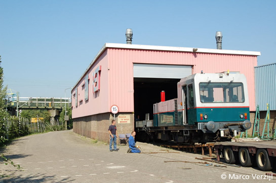
Locomotief 6201 wordt met behulp van een lier op de dieplader getrokken.
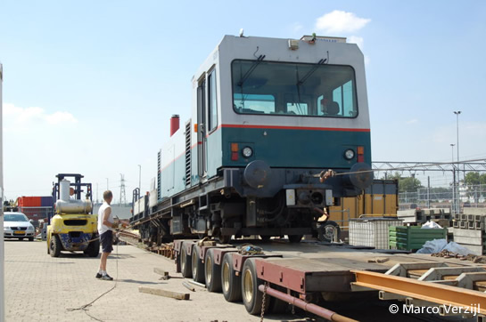
Na de reis over de weg wordt de locomotief afgeladen op het werkemplacement van de lijnwerkplaats Waalhaven.
Inzet Type T Erasmuslijn
Op 3 augustus werden op de Erasmuslijn twee wagendiensten gereden met rijtuigen van het type T. Wagendienst 901 werd gereden door de rijtuigen 5259-5244-5236 en wagendienst 906 werd gereden door de rijtuigen 5242-5225-5209. De combinaties vertrokken vanaf de opstelsporen bij station De Akkers, omdat het reguliere materieel (5300-serie) op dat moment met opstartproblemen kampte.
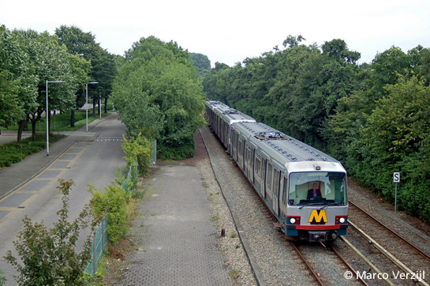
De rijtuigen 5209, 5225 en 5242 naderen station Rhoon.
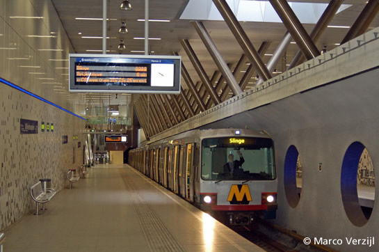
Wagendienst 901 in station Wilhelminaplein, spoor 2.
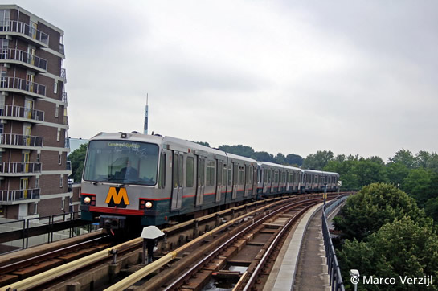
Wagendienst 906 richting Centraal Station nadert station Zuidplein.
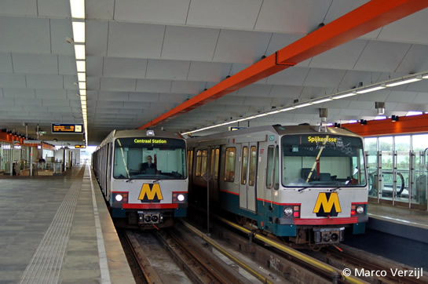
Beide wagendiensten vastgelegd in station Zuidplein.
Fiets in de metro
Vanaf 1 oktober mogen fietsen ook overdag mee in de Rotterdamse metro. Tussen de spitsen (vanaf 9.00 uur tot 16.00 uur) en na de avondspits (vanaf 18.00 uur), kunnen rijwielen kosteloos meegenomen worden. Het betreft een proef in opdracht van de Stadsregio Rotterdam, die loopt tot 1 april 2009. De metrorijtuigen worden voorzien van bestickering op of bij de deuren, die aangeeft hoeveel fietsen per rijtuig toegestaan zijn.
Nieuw sporenplan
Op deze website is bij het onderdeel Metro-Info het sporenplan van de Rotterdamse metro en RandstadRail te bekijken. Aangezien deze kaart inmiddels gedateerd is, kan hieronder een recente versie gedownload worden. Het sporenplan is een schematisch overzicht van de Rotterdamse metrosporen met daarop onder andere stations, spoornummers, wisselcomplexen en stroomrailgroepen.